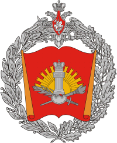

О нас
«Должно приучать россиян к уважению собственному»
Ф. Лефорт, 1685
Мы живем в XXI веке, живое общение часто заменяют мобильными телефонами или интернетом. Сплошь и рядом машины и высокие технологии. И если современному человеку задать вопрос о бале, то у большинства людей сложится картинка из кинофильма «Воина и мир». Образ Наташи Ростовой многим кажется, что это прекрасное прошлое‚ которое нельзя вернуть. Да, прошлого не вернуть, и стоит ли его возвращать?!
Центр общегражданского Протокольного Этикета Торжеств (ЦОПЭТ) «Высокий стиль» занимается возрождением бальной формы торжеств, придавая ему современное звучание. Современное общество не нуждается в банальном копировании прошлого. Ему нужны современные балы, отвечающие тенденциям сегодняшнего дня, помогающие решать насущные вопросы.
Итак, участие в бале открывает новые возможности в овладении искусством танца и хорошими манерами, в развитии навыков бального и светского этикета, а также в освоении базовых основ салонной бальной хореографии. Бальные танцы, являясь произведением поведенческого искусства, развивают у человека потребность в гармонии души и тела, учат лучше понимать, чувствовать и уважать друг друга.
В организации и проведении балов и танцевальных вечеров ЦОПЭТ принимает участие Парадно-протокольный взвод (ППВ) — курсанты Военного университета Министерства Обороны Российской Федерации. Мы будем рады видеть Вас на наших балах и танцевальных вечерах!